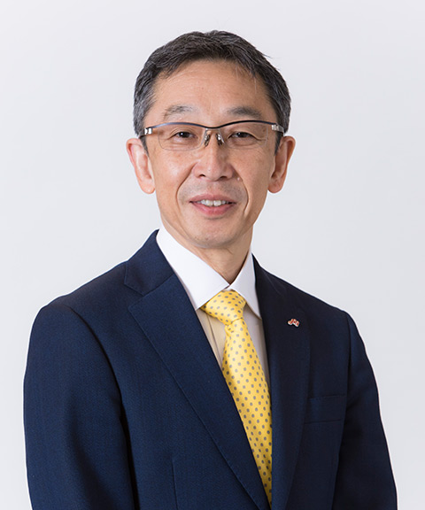
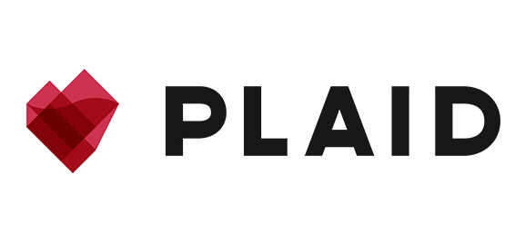
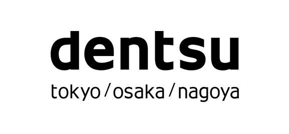

日経クロストレンドフォーラム 2023 ／CHATBOT SUMMIT TOKYO 2023は終了いたしました。
多数のご視聴ありがとうございました。
2つのカンファレンス
イベント同時開催！個客関係を共創する
～顧客から個客へ、体験（コト）のその先へ～世界が注目するジェネレーティブAI、会話型AIのイベント
#1 Generative & Conversational AI Conference
Chatbot Summit
【日経クロストレンドフォーラム 2023】
主催 日経クロストレンド
会期 2023年7月19日（水）～ 20日（木）：オンライン開催
受講料 全セッション無料（事前登録）【CHATBOT SUMMIT TOKYO 2023】
主催 日経クロストレンド／CHATBOT SUMMIT事務局
会期 2023年7月19日（水）：オンライン開催
受講料 全セッション無料（事前登録）
開催概要
【日経クロストレンドフォーラム 2023】
個客関係を共創する
～顧客から個客へ、体験（コト）のその先へ～
コロナ禍を経験し、顧客とのつながりを実感した企業は多いのではないでしょうか。リアルに人流が戻っても、デジタルで構築した顧客との関係性の大切さは変わりません。画一的な「顧客」ではなく、一人ひとりそれぞれ異なる「個客」にどう対応し、デジタルとリアルの良さをうまく生かしながら、ブランドらしい「体験」をいかに提供していくか。マーケティングDX、リテールメディア、顧客体験設計……最先端を行く企業からの多彩な講演を、ぜひお楽しみください！
【CHATBOT SUMMIT TOKYO 2023】
#1 Generative & Conversational AI Conference
Chatbot Summit
CHATBOT SUMMIT TOKYO は今年で4年目を迎えます。これまで3000名を超える視聴者にグローバルな視野でコミュニケーションAIの世界を伝えてきました。2022年末、ChatGPTのリリースを機に、Google がコードレッド（緊急事態）を発動。世界と市場は急激にAIの進化を受け入れています。AIは破壊か創造か、賛否両論はありますが、進化を続ける技術と共に、新たなビジネスモデルが生まれるのは時間の問題です。賽は投げられた、世界が変わる世紀のチャンス。貴方も世界と未来に目を向ければ、変わりゆく世の中の少し先を見ることができるはずです。CHATBOT SUMMIT TOKYOは、本年も進化を遂げるAIの世界をお届けします。
タイムテーブル
受講希望のセッションを１つ以上お選びいただきお申し込みください。
同じ時間帯の複数セッションは、お申込みできません。
日経クロストレンドフォーラム 7.19
日経クロストレンドフォーラム 7.20
FS-221-2
主催者講演
13:00～13:40
味の素が挑むマーケ改革 ヒットを生む新発想と組織づくり
- 
岡本 達也 氏
味の素
執行役常務 食品事業本部副事業本部長兼マーケティングデザインセンター長
大松 孝弘 氏
デコム
代表取締役社長

田村 葉
＜モデレーター＞日経BP
日経クロストレンド編集 記者
詳細を見る
FS-222-2
主催者講演
13:00～13:40
「フライングタイガー」V字回復の裏側～5つの立て直し策
松山 恭子 氏
Zebra Japan（Flying Tiger Copenhagen）
代表取締役CEO

公文 紫都
＜モデレーター＞日経BP
日経クロストレンド編集 記者
詳細を見る
FS-231-2
主催者講演
15:10～15:50
YouTube急成長の老舗書店「有隣堂」 店に行きたくなる仕掛け
渡邉 郁 氏
有隣堂
広報・マーケティング部 担当課長

R.B.ブッコロー 氏
有隣堂
YouTube「有隣堂しか知らない世界」チャンネルMC
河村 優
＜モデレーター＞日経BP
日経クロストレンド編集 記者
詳細を見る
CHATBOT SUMMIT TOKYO 7.19
POLITICAL MARKETING DX 7.20
日経クロストレンドフォーラム 協賛社
プラチナ協賛

ゴールド協賛
